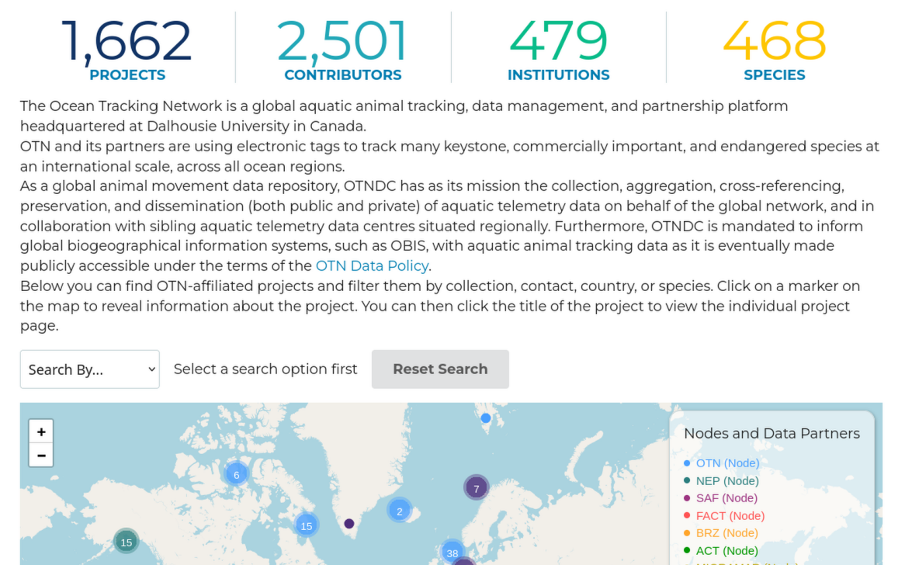

otndata is a wrapper around the Ocean Tracking Network’s Plone content management system setup. The Ocean Tracking Network (OTN), Atlantic Cooperative Telemetry Network (ACT), Pacific Islands Region Acoustic Telemetry Network (PIRAT), and Northeast Pacific Acoustic Telemetry Network (N-PACT) are all nominally supported, but some things might not work depending on the structure of the network and the optional add-ins used. Because of this, bug reports are really, really, really appreciated!!
Installation
You can install the development version of otndata from GitHub with:
# install.packages("pak")
pak::pak("mhpob/otndata")Example
There are a few things that can be accessed without logging in. Most nodes come pre-baked with a statistics widget and a project map:

If this widget is enabled, you can access the information shown without needing to log in.
library(otndata)
# OTN's server (default)
otn_list_species() |>
head()
#> scientificname commonname
#> 1 Abramis brama common bream
#> 2 Acanthocybium solandri wahoo
#> 3 Acanthurus bahianus cirujano pardo
#> 4 Acanthurus blochii ringtail surgeonfish
#> 5 Acanthurus chirurgus doctorfish
#> 6 Acanthurus coeruleus blue tang
# Try a different server
otn_list_projects(server = "act") |>
head()
#> node collectioncode country longitude latitude
#> 1 ACT RUSHARK USA -73.8185 38.0705
#> 2 ACT BTW1A USA -73.8150 38.0700
#> 3 ACT REVCOD USA -73.8185 38.0705
#> 4 ACT RAPPTRIBE USA -73.8185 38.0705
#> 5 ACT RIWFCC USA -73.8185 38.0705
#> 6 ACT INVENERGY USA -73.8185 38.0705
#> shortname
#> 1 RUCOOL HMS Shark Study
#> 2 BTWaves Caribbean Acoustic Tagging
#> 3 Orsted Cod
#> 4 Rappahannock Tribe Rappahannock River Array
#> 5 Narragansett Bay Cable Corridor Monitoring
#> 6 Invenergy Monitoring
#> longname
#> 1 Investigating the movements and distribution of highly migratory shark species in the U.S. Northeast Shelf Large Marine Environment
#> 2 Beneath the Waves acoustic tagging in the Caribbean
#> 3 Orsted Wind Farm Cod Monitoring
#> 4 Rappahannock River Telemetry Array
#> 5 Narragansett Bay Wind Farm Cable Corridor Monitoring
#> 6 Invenergy Whale Monitoring
#> ocean website
#> 1 NW ATLANTIC <NA>
#> 2 NW ATLANTIC https://www.beneaththewaves.org/initiatives/
#> 3 NW ATLANTIC https://rucool.marine.rutgers.edu
#> 4 NW ATLANTIC https://www.rappahannocktribe.org/environmentalservices/
#> 5 NW ATLANTIC <NA>
#> 6 NW ATLANTIC https://rucool.marine.rutgers.edu
#> datacenter_infourl
#> 1 NA
#> 2 NA
#> 3 NA
#> 4 NA
#> 5 NA
#> 6 NA
#> institutionname
#> 1 Rutgers University Department of Marine and Coastal Sciences
#> 2 Mid-Atlantic Acoustic Telemetry Observation System
#> 3 Rutgers University Department of Marine and Coastal Sciences
#> 4 Rappahannock Tribe
#> 5 Rhode Island Department of Environmental Management, Division of Marine Fisheries
#> 6 Rutgers University Department of Marine and Coastal Sciences
otn_list_stats(server = "devel")
#> $project_count
#> [1] 1662
#>
#> $contributor_count
#> [1] 2501
#>
#> $inst_count
#> [1] 479
#>
#> $species_count
#> [1] 468
#>
#> $rcvr_count
#> [1] 2824You can also query projects according to code, country of origin, species, institution, node, or point of contact.
otn_search_node("ACT") |>
head()
#> node collectioncode country longitude latitude
#> 1 ACT ASISEAL USA -73.8185 38.0705
#> 2 ACT SBURAA USA -73.8185 38.0705
#> 3 ACT WRWASTBASS USA -73.8185 38.0705
#> 4 ACT WTGHABASS USA -73.8185 38.0705
#> 5 ACT NCBONITO USA -73.8185 38.0705
#> 6 ACT CT008 USA -73.8185 38.0705
#> shortname
#> 1 ASI - Seal Movement in New England Waters
#> 2 SBU HRF Sturgeon RAA
#> 3 WRWA/ SBI Striped Bass
#> 4 WTGHA Menemsha Complex Striped Bass
#> 5 NC Atlantic Bonito Tagging - NCSU/TNC
#> 6 CT DEEP Array (2022-2026)
#> longname
#> 1 Understanding the movement ecology of rehabilitated seals in New England waters and potential interaction with white sharks
#> 2 Defining the ecological and conservation importance of the Rockaway Atlantic Sturgeon aggregation area (RAA)
#> 3 Initial assessment of seasonal fidelity of striped bass in the Westport River.
#> 4 Striped Bass Site Attachment and Habitat Use in Menemsha Pond
#> 5 Tracking coastwide movements of Atlantic bonito, Sarda sarda
#> 6 CT DEEP array of VEMCO receivers in Long Island Sound and lower Connecticut River, 2022-2026.
#> ocean website
#> 1 NW ATLANTIC http://www.atlanticsharkinstitute.org
#> 2 NW ATLANTIC <NA>
#> 3 NW ATLANTIC <NA>
#> 4 NW ATLANTIC <NA>
#> 5 NW ATLANTIC <NA>
#> 6 NW ATLANTIC <NA>
#> datacenter_infourl
#> 1 https://matos.asascience.com/
#> 2 https://matos.asascience.com/
#> 3 https://matos.asascience.com/
#> 4 https://matos.asascience.com/
#> 5 https://matos.asascience.com/
#> 6 https://matos.asascience.com/
# This accepts partial matches
otn_search_code("tail")
#> node collectioncode country longitude latitude shortname
#> 1 ACT TAILWINDS USA -73.8185 38.0705 UMCES TailWinds
#> longname
#> 1 TailWinds: Team for Assessing Impacts to Living resources from offshore WIND turbineS
#> ocean website datacenter_infourl
#> 1 NW ATLANTIC https://tailwinds.umces.edu/ https://matos.asascience.com/
# This does not accept partial matches
otn_search_contact("Mike O'Brien")
#> node collectioncode country longitude latitude
#> 1 ACT NAVYKENN USA -69.7800 43.7750
#> 2 ACT CBBBMB USA -73.8150 38.0700
#> 3 ACT TAILWINDS USA -73.8185 38.0705
#> 4 ACT MAMBON USA -73.8185 38.0705
#> shortname
#> 1 Navy Kennebec ME Telemetry Array
#> 2 UMCES Chesapeake Backbone, Mid-Bay
#> 3 UMCES TailWinds
#> 4 Mid-Atlantic MBON
#> longname
#> 1 Naval Undersea Warfare Center (NUWC) Kennebec River and Offshore Acoustic Telemetry Monitoring
#> 2 Building a Mainstem Chesapeake Bay Telemetry Array: Mid-Bay Segment
#> 3 TailWinds: Team for Assessing Impacts to Living resources from offshore WIND turbineS
#> 4 Mid-Atlantic MBON: Dynamic Biodiversity and Telemetry Data for a Changing Coast
#> ocean website
#> 1 NW ATLANTIC <NA>
#> 2 NW ATLANTIC <NA>
#> 3 NW ATLANTIC https://tailwinds.umces.edu/
#> 4 NW ATLANTIC https://marinebon.org/us-mbon/mid-atlantic-mbon/
#> datacenter_infourl
#> 1 https://matos.asascience.com/
#> 2 https://matos.asascience.com/
#> 3 https://matos.asascience.com/
#> 4 https://matos.asascience.com/You’ll likely need to log in to access other parts of the CMS. You can set your username and password for your system using the otn_set_credentials helper function.
After that, you can just log in using otn_login. This package is meant to interface with any node’s Plone instance. You can switch between them using the server argument.
otn_login(server = 'act')
#> ✔ Login successful!List your project’s files:
otn_project_files(project = 'tailwinds', server = 'act', batch_size = 5)
#> name description
#> 1 tailwinds_master_metadata_20240812.csv
#> 2 tailwinds_metadata_deployment_202411.xlsx
#> 3 tailwinds_otn_metadata_deployment.xlsx
#> 4 tailwinds_otn_metadata_deployment_202404.xlsx
#> 5 VR2AR_546307_20240425_1.vrl
#> url
#> 1 https://data.theactnetwork.com/data/repository/tailwinds/data-and-metadata/receiver-metadata/tailwinds_master_metadata_20240812.csv
#> 2 https://data.theactnetwork.com/data/repository/tailwinds/data-and-metadata/receiver-metadata/tailwinds_metadata_deployment_202411.xlsx
#> 3 https://data.theactnetwork.com/data/repository/tailwinds/data-and-metadata/receiver-metadata/tailwinds_otn_metadata_deployment.xlsx
#> 4 https://data.theactnetwork.com/data/repository/tailwinds/data-and-metadata/receiver-metadata/tailwinds_otn_metadata_deployment_202404.xlsx
#> 5 https://data.theactnetwork.com/data/repository/tailwinds/data-and-metadata/detection-files/vr2ar_546307_20240425_1.vrl
#> created modified creator size type
#> 1 2026-06-10 03:51:32 2026-06-10 03:51:32 krichie 2.5 KB File
#> 2 2026-06-10 03:51:58 2026-06-10 03:51:58 krichie 41.9 KB File
#> 3 2026-06-10 03:52:17 2026-06-10 03:52:17 krichie 37.0 KB File
#> 4 2026-06-10 03:52:30 2026-06-10 03:52:30 krichie 36.7 KB File
#> 5 2026-06-10 03:55:34 2026-06-10 03:55:34 krichie 751.0 KB File
otn_extract_files(project = 'tailwinds', server = 'act', batch_size = 5)
#> name description
#> 1 tailwinds_qualified_detections_2023.parquet
#> 2 tailwinds_qualified_detections_2023.zip
#> 3 tailwinds_qualified_detections_2024.parquet
#> 4 tailwinds_qualified_detections_2024.zip
#> 5 tailwinds_unqualified_detections_2023.parquet
#> url
#> 1 https://data.theactnetwork.com/data/repository/tailwinds/detection-extracts/tailwinds_qualified_detections_2023-parquet
#> 2 https://data.theactnetwork.com/data/repository/tailwinds/detection-extracts/tailwinds_qualified_detections_2023.zip
#> 3 https://data.theactnetwork.com/data/repository/tailwinds/detection-extracts/tailwinds_qualified_detections_2024-parquet
#> 4 https://data.theactnetwork.com/data/repository/tailwinds/detection-extracts/tailwinds_qualified_detections_2024.zip
#> 5 https://data.theactnetwork.com/data/repository/tailwinds/detection-extracts/tailwinds_unqualified_detections_2023-parquet
#> created modified creator size type
#> 1 2026-06-12 13:25:31 2026-06-12 13:25:31 krichie 133.0 KB File
#> 2 2026-06-12 13:25:49 2026-06-12 13:25:50 krichie 95.6 KB File
#> 3 2026-06-12 13:26:03 2026-06-12 13:26:03 krichie 174.2 KB File
#> 4 2026-06-12 13:26:19 2026-06-12 13:26:19 krichie 129.7 KB File
#> 5 2026-06-12 13:26:33 2026-06-12 13:26:33 krichie 602.3 KB FileOr, just grab the ones modified more recently using the since argument:
otn_project_files(
project = 'tailwinds',
since = "2026-06-01",
server = 'act',
batch_size = 5
)
#> name description
#> 1 tailwinds_master_metadata_20240812.csv
#> 2 tailwinds_metadata_deployment_202411.xlsx
#> 3 tailwinds_otn_metadata_deployment.xlsx
#> 4 tailwinds_otn_metadata_deployment_202404.xlsx
#> 5 VR2AR_546307_20240425_1.vrl
#> url
#> 1 https://data.theactnetwork.com/data/repository/tailwinds/data-and-metadata/receiver-metadata/tailwinds_master_metadata_20240812.csv
#> 2 https://data.theactnetwork.com/data/repository/tailwinds/data-and-metadata/receiver-metadata/tailwinds_metadata_deployment_202411.xlsx
#> 3 https://data.theactnetwork.com/data/repository/tailwinds/data-and-metadata/receiver-metadata/tailwinds_otn_metadata_deployment.xlsx
#> 4 https://data.theactnetwork.com/data/repository/tailwinds/data-and-metadata/receiver-metadata/tailwinds_otn_metadata_deployment_202404.xlsx
#> 5 https://data.theactnetwork.com/data/repository/tailwinds/data-and-metadata/detection-files/vr2ar_546307_20240425_1.vrl
#> created modified creator size type
#> 1 2026-06-10 03:51:32 2026-06-10 03:51:32 krichie 2.5 KB File
#> 2 2026-06-10 03:51:58 2026-06-10 03:51:58 krichie 41.9 KB File
#> 3 2026-06-10 03:52:17 2026-06-10 03:52:17 krichie 37.0 KB File
#> 4 2026-06-10 03:52:30 2026-06-10 03:52:30 krichie 36.7 KB File
#> 5 2026-06-10 03:55:34 2026-06-10 03:55:34 krichie 751.0 KB File
otn_extract_files(
project = 'tailwinds',
since = "2026-06-01",
server = 'act',
batch_size = 5
)
#> name description
#> 1 tailwinds_qualified_detections_2023.parquet
#> 2 tailwinds_qualified_detections_2023.zip
#> 3 tailwinds_qualified_detections_2024.parquet
#> 4 tailwinds_qualified_detections_2024.zip
#> 5 tailwinds_unqualified_detections_2023.parquet
#> url
#> 1 https://data.theactnetwork.com/data/repository/tailwinds/detection-extracts/tailwinds_qualified_detections_2023-parquet
#> 2 https://data.theactnetwork.com/data/repository/tailwinds/detection-extracts/tailwinds_qualified_detections_2023.zip
#> 3 https://data.theactnetwork.com/data/repository/tailwinds/detection-extracts/tailwinds_qualified_detections_2024-parquet
#> 4 https://data.theactnetwork.com/data/repository/tailwinds/detection-extracts/tailwinds_qualified_detections_2024.zip
#> 5 https://data.theactnetwork.com/data/repository/tailwinds/detection-extracts/tailwinds_unqualified_detections_2023-parquet
#> created modified creator size type
#> 1 2026-06-12 13:25:31 2026-06-12 13:25:31 krichie 133.0 KB File
#> 2 2026-06-12 13:25:49 2026-06-12 13:25:50 krichie 95.6 KB File
#> 3 2026-06-12 13:26:03 2026-06-12 13:26:03 krichie 174.2 KB File
#> 4 2026-06-12 13:26:19 2026-06-12 13:26:19 krichie 129.7 KB File
#> 5 2026-06-12 13:26:33 2026-06-12 13:26:33 krichie 602.3 KB FileYou can download a file via its URL. This is a BIG work in progress and the API will likely change multiple times in the coming weeks.
otn_download(
url = "https://members.devel.oceantrack.org/data/repository/nsbs/detection-extracts/nsbs_matched_detections_2017.zip"
)